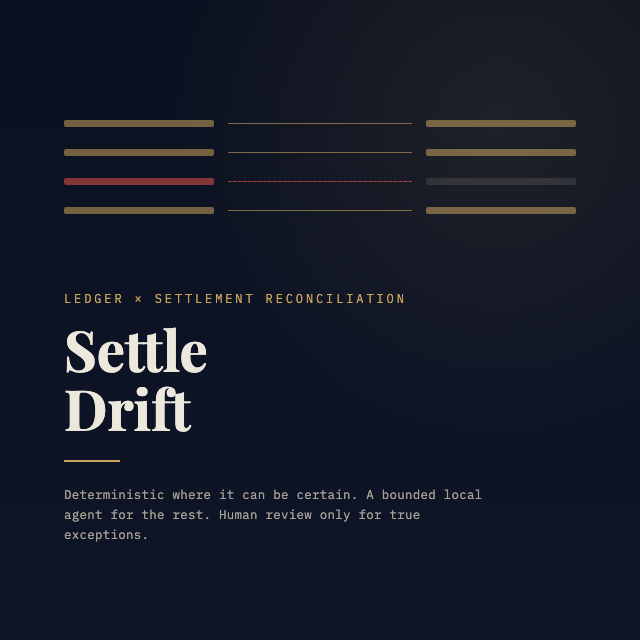

AI Finance Controller · Reconciliation Agent
SettleDrift
Reconciles a merchant's internal sales ledger against a payment gateway's settlement report — resolves what it's certain of with zero LLM calls, hands a bounded local agent only the genuinely ambiguous remainder, and never lets a "missing counterpart" exception get auto-approved no matter how confident the model claims to be.

The Problem
Two books
that rarely agree.
Every merchant on a payment gateway keeps two ledgers that are supposed to match: their own order records, and the gateway's settlement report. They rarely agree exactly — fees round differently, refunds land partially, payouts split across UTRs, settlements lag, duplicates creep in, and sometimes one side simply never gets a counterpart. Finance teams reconcile this by hand, in spreadsheets, every month. SettleDrift automates the boring 80% with zero LLM calls, uses a bounded local model for the ambiguous remainder, and is explicit — down to a per-order audit trail — about exactly what it resolved itself versus what it's asking a human to look at.
The Taxonomy
Six drift classes,
one that can't be argued down.
Fully deterministic
Fee/GST rounding drift, timing lag, and partial refunds all turned out to be arithmetic the matcher can answer with certainty once the right fields — settlement lag, amount diff, the ledger's own refund status — are precomputed. No model call needed.
Genuinely structural
Split settlements (one ledger row, multiple payouts) and duplicate entries require reasoning about the shape of the mismatch across two tables — this is what the bounded local agent actually earns its keep on.
Never auto-resolvable
A missing counterpart is a true exception — there's nothing on the other side to confirm a match against. Hard-gated in the confidence layer regardless of how confident the model claims to be.
The Failure, Fixed
63% accuracy
on the first real run.
The honest failure path is part of the design, not hidden
from it. The first end-to-end run against local
qwen2.5-coder:3b scored 63% overall accuracy — a
reporting bug conflated tolerance-matched orders with clean
matches, and the raw-arithmetic evidence handed to the model
led it to confidently (confidence 1.0) mislabel obvious
partial-refunds and timing-lags as simple rounding drift.
Precomputing that arithmetic instead of asking a 3B model to
do rupee math in its head — and recognizing those classes
didn't need a model at all — pushed accuracy to
100% and cut LLM calls by 85%. Re-verified
at 1,000 transactions and again against Gemini as a second
provider: same 100%, confirming the architecture is what's
carrying the result, not one model's quirks.
Status
Live demo,
not a slide deck.
Full CLI (gen · reconcile ·
dashboard · exceptions ·
sweep) plus a local web UI —
settledrift serve — that streams every order's
classification live over Server-Sent Events, then serves a
self-contained dashboard and a one-click
exceptions.csv. 39 tests, all offline-runnable
against a stubbed provider — no Ollama required in CI. Built
for the Razorpay AI Buildathon (Track: AI Finance
Controller).